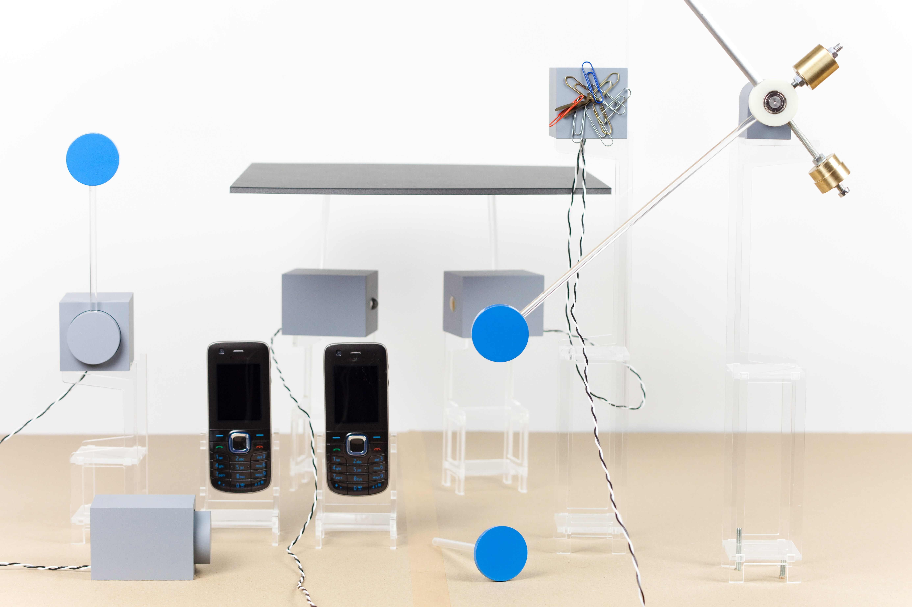
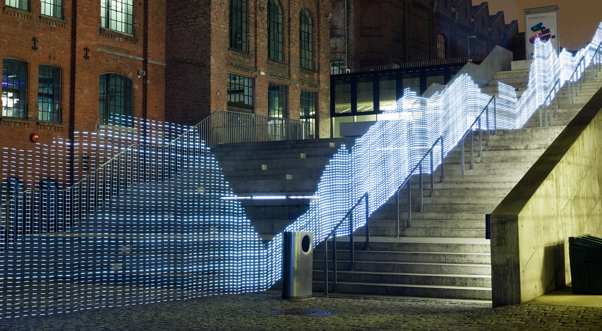
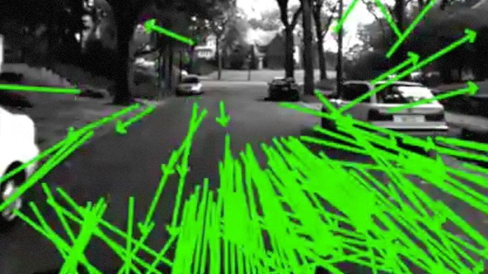
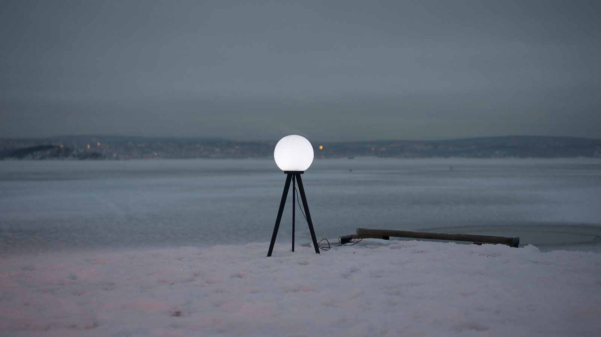
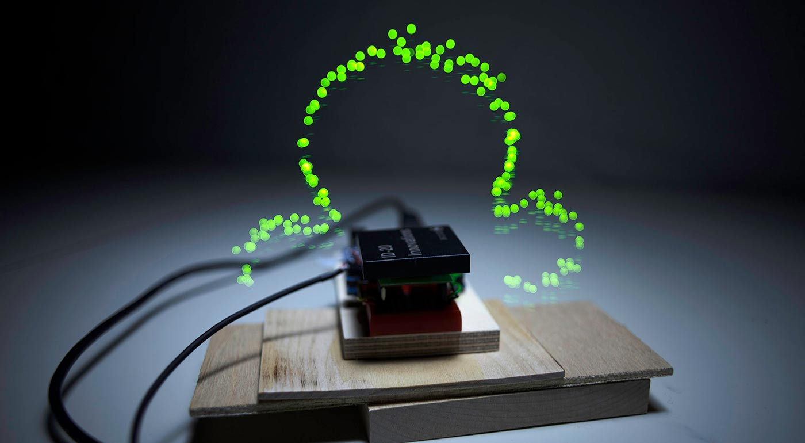
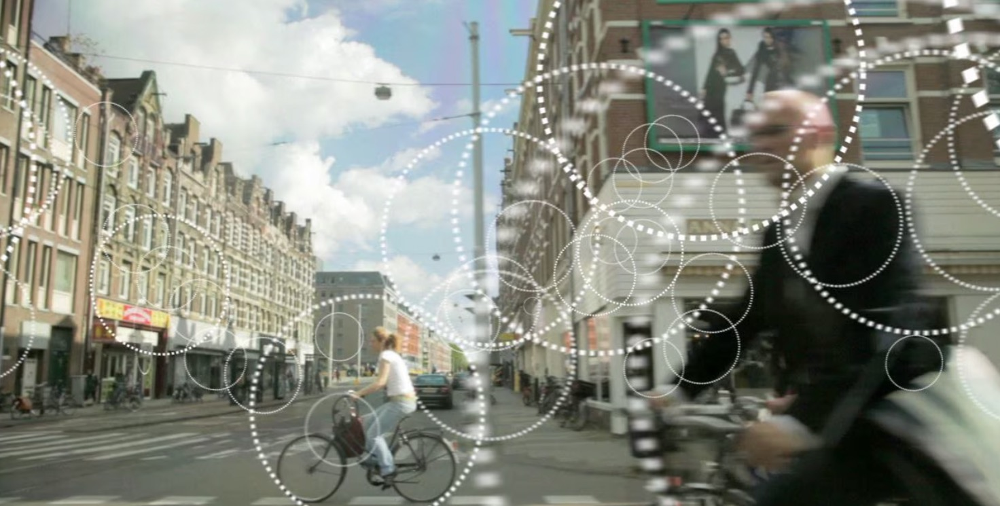

Immaterials was a body of research, films, and objects by the Norwegian-British designer and filmmaker Timo Arnall, presented at Lighthouse in Brighton as part of Brighton Digital Festival 2013. The project set out to do something deceptively simple: make the invisible infrastructure of contemporary digital life visible. WiFi signals, RFID transmissions, GPS satellites, machine vision — the technologies that now structure daily experience but remain entirely imperceptible to human senses.
The exhibition brought together several years of Arnall's collaborative work. Light Painting WiFi used long-exposure photography to trace the terrain of wireless signal strength across urban environments, turning invisible fields into luminous topographies. Robot Readable World, a film constructed entirely from machine-vision research footage, asked what the world looks like to a camera rather than a human eye. Satellite Lamps, a new commission for the exhibition, lit domestic space in response to the real-time positions of GPS satellites overhead. Together the works formed an argument: that understanding the systems surrounding us is the first step towards being able to reimagine them.
The exhibition exemplifies a concern running through Honor Harger's curatorial practice: the conviction that making complex, invisible systems perceptible, whether electromagnetic fields, satellite networks, or the processes of machine vision, is not merely an aesthetic proposition but an epistemological one. Immaterials was Timo Arnall's first major UK exhibition.

Honor Harger
Timo Arnall · Einar Sneve Martinussen · Jørn Knutsen · Jack Schulze · Matt Jones
Lighthouse, Brighton · Brighton Digital Festival, 2013




